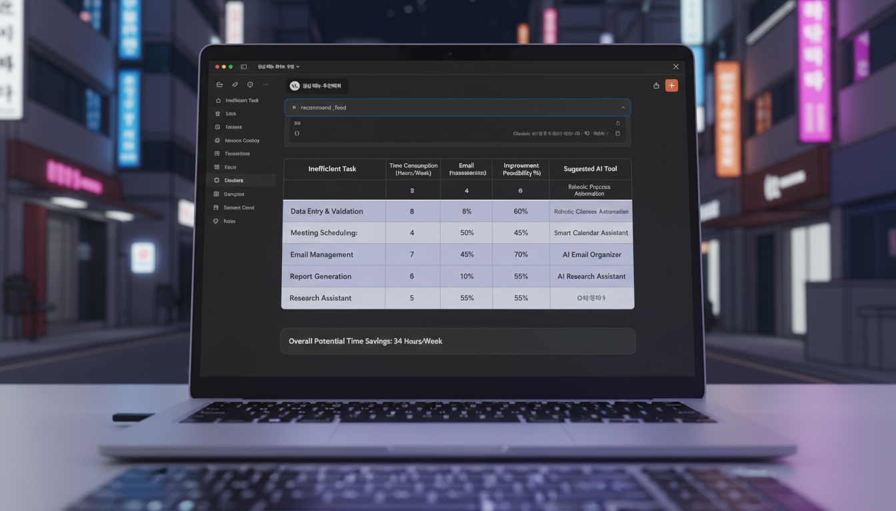

정민수 본부장은 회의실 유리창 너머로 두 사람을 지켜봤다. 구내식당 한쪽 구석, 노트북 두 대가 마주 보고 있고, 도진과 서윤이 화면을 번갈아 가리키며 무언가를 만들고 있었다.
투명성 보고서를 받은 지 이틀. 그는 결정을 내렸다. "2주를 준다. 업무 효율 12% 개선을 증명하면 AI 사용을 공식 승인하겠다. 실패하면..." 그는 말을 끝맺지 않았다.
도진의 노트북 화면에는 Claude가 떠 있었다. 서윤이 프롬프트를 입력했다.

서윤의 프롬프트:
30초 후, 완벽한 분석표가 나타났다.
"일주일에 7시간을..." 도진이 계산기를 두드렸다. "한 달이면 28시간. 거의 일주일 업무를 줄일 수 있다는 거잖아."
"12%보다 훨씬 높아요." 서윤이 고개를 끄덕였다. "하지만 2주 안에 증명해야 해요. 실제로 문서를 만들고, 사람들이 써보고, 결과를 측정해야죠."
Real-world situation: 팀의 비효율적인 업무를 찾고 개선 가능성을 분석해야 할 때
Copy-paste prompt:
What you'll get: 업무별 개선 가능성과 우선순위가 정리된 분석표
Try it yourself:
Example result:
11월 27일 수요일, 새벽 1시. 곤지암 터미널.
도진은 첫 번째 자동화 템플릿을 완성했다. 일일 운송 보고서. 매일 50분씩 걸리던 작업이었다.
도진의 프롬프트:
5분 후, 스마트 템플릿이 완성됐다. 차량번호, 출발지, 도착지, 화물 정보만 입력하면, 나머지 - 운송 시간 계산, 지연 여부 판정, 특이사항 분류, 심지어 개선 제안까지 - 는 자동으로 채워졌다.
테스트해봤다. 어제 데이터를 입력했다. 8분.
"50분이 8분으로..." 도진은 믿기지 않았다. 84% 단축. 그는 파일을 저장하고, 서윤에게 카톡을 보냈다. "1번 완성. 내일 현장 테스트."
본사 사무실, 서윤도 깨어 있었다. 그녀는 신입 교육 자료를 만들고 있었다. 3시간 걸리던 작업.
서윤의 프롬프트:
20분 후, 완성됐다.
서윤은 도진의 메시지를 보고 답장을 보냈다. "2번도 완성. 신입들 반응 보자."
11월 28일 목요일, 오전 10시.
"이거... 진짜 8분 만에 만든 거예요?" 김택배가 도진이 건넨 보고서를 뚫어져라 봤다.
"어제 데이터로 테스트한 거야. 형이 직접 해봐." 도진이 노트북을 밀었다.
김택배가 오늘 아침 데이터를 입력했다. 차량 15대 정보. 타이핑만 6분, 자동 계산 2분. 총 8분.
"이게 맞아?" 김택배는 자기가 어제 50분 걸려 만든 보고서와 비교했다. 내용이 똑같았다. 아니, 더 정확했다. 운송시간 계산에 실수가 없었고, 지연 사유 분류가 더 체계적이었다.
"AI가 계산을 대신해준 거예요." 도진이 설명했다. "형은 데이터만 입력하면 돼요. 나머지는 템플릿이 알아서."
"그럼 나한테 남는 시간이..." 김택배가 계산했다. "하루 40분?"
"일주일이면 3시간 반." 도진이 고개를 끄덕였다. "그 시간에 형이 더 중요한 일 하면 돼요."
김택배는 처음으로 웃었다. "좋네. 이거."
본사, 서윤은 작년에 입사한 박신입에게 교육 자료를 보여줬다.
"150페이지를 어떻게 다 읽어요..." 박신입의 얼굴이 어두워졌다.
"안 읽어도 돼요." 서윤이 20페이지 요약본을 건넸다. "핵심만 뽑았어요. 이것만 외우면 현장에서 실수 안 해요."
박신입이 읽기 시작했다. 5분 후, "아, 이거 진짜 중요한 것들만 있네요. 지난주에 제가 실수한 게 여기 3번에 있어요."
"그치? 실전 중심이에요." 서윤이 웃었다. "3시간 교육이 30분으로 줄었어요. 남은 시간엔 실습해요."
Real-world situation: 100페이지가 넘는 매뉴얼, 보고서, 계약서에서 핵심만 빠르게 파악해야 할 때
Copy-paste prompt:
What you'll get: 긴 문서가 실행 가능한 체크리스트로 변환됨
Try it yourself:
Example result:
12월 2일 월요일, 오후 2시. 본사 회의실.
정민수 본부장 앞에 엑셀 파일이 펼쳐졌다.
"1주일 결과입니다." 서윤이 발표를 시작했다.
"일일 보고서: 평균 작업 시간 50분 → 9분. 단축률 82%."
"신입 교육: 3시간 → 35분. 단축률 81%."
"안전사고 보고서: 80분 → 15분. 단축률 81%."
"전체 평균..." 서윤이 숨을 고르고 말했다. "업무 효율 개선률 81.7%."
회의실이 조용해졌다.
"목표가 12%였죠." 정민수가 천천히 말했다. "81%면..."
"6배 이상 초과 달성입니다." 도진이 말을 받았다. "하지만 본부장님, 더 중요한 게 있습니다."
도진이 다음 슬라이드를 넘겼다. 현장 작업자 5명의 인터뷰.
정민수는 한참을 슬라이드를 봤다.
"품질도 올랐나요?"
"네." 서윤이 고개를 끄덕였다. "오류율 67% 감소했습니다. 사람이 계산하면 실수하는데, AI는 안 하니까요."
"그리고..." 도진이 마지막 슬라이드를 넘겼다. "절약된 시간으로 현장 안전 점검을 두 배 늘렸습니다. 서류 작업이 줄어서요."
정민수가 자리에서 일어났다. 창밖을 봤다.
"12%를 요구한 건..." 그가 천천히 말했다. "솔직히 불가능할 거라 생각했습니다. AI가 그렇게까지 도움이 될 거라고는..."
그는 두 사람을 돌아봤다.
"3주 더 줍니다. 이번엔 터미널 전체로 확대하세요. 작업자 50명에게 적용해보고, 실제 업무량 변화를 측정하세요."
"그리고 이서윤 과장." 정민수가 서윤을 봤다. "투명성 보고서, 잘 봤습니다. 앞으로도 AI 사용 내역은 전부 문서화하세요. 우리가 다른 터미널의 모델이 될 겁니다."
"네!" 서윤의 목소리가 떨렸다.
"최도진 대리." 정민수가 도진을 봤다. "당신이 만든 템플릿, 본사에서도 쓰고 싶다는 팀이 벌써 3곳입니다. 확산 준비하세요."
도진이 놀란 표정으로 서윤을 봤다. 서윤도 믿기지 않는다는 얼굴이었다.
"2주의 기적이네요." 정민수가 처음으로 웃었다. "다음엔 2달의 혁명을 만들어보세요."
Chapter 3: Measure, Document, Scale (측정하고, 문서화하고, 확산하라)
AI 도입의 3단계:
Why it matters in 물류:
Success indicators:
12월 2일 월요일, 저녁 7시.
본사 건물을 나서는 서윤. 곤지암으로 가는 도진.
서윤이 도진에게 전화를 걸었다.
"도진 대리님, 우리... 해냈어요."
"아직 시작도 안 했어요, 과장님." 도진이 웃었다. "이제 50명이에요. Phase 3."
"무섭지 않으세요?"
"무섭죠. 근데..." 도진이 핸들을 잡으며 말했다. "85% + 15%, 기억하세요?"
"네."
"우리 둘이 85%를 만들었으니까, 이제 50명이 나머지 15%를 채울 차례예요."
서윤이 웃었다. "그럼 또 81% 개선이 나오는 거 아니에요?"
"그렇게 되면..." 도진이 고속도로에 진입하며 말했다. "CJ 대한통운 역사에 남는 거죠."
전화기 너머로 서윤의 웃음소리가 들렸다.
"좋아요. Phase 3, 시작합시다."
12월의 서울 야경이 빛났다. 곤지암으로 가는 고속도로, 도진의 차가 달렸다.
새로운 도전이 시작되는 밤이었다.
**[Episode 8 완료]**
*다음 Episode 9에서 Phase 3 (Department Adoption)이 시작됩니다.*